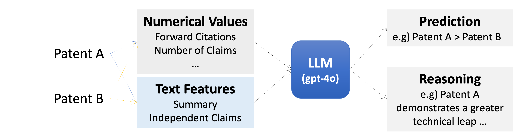
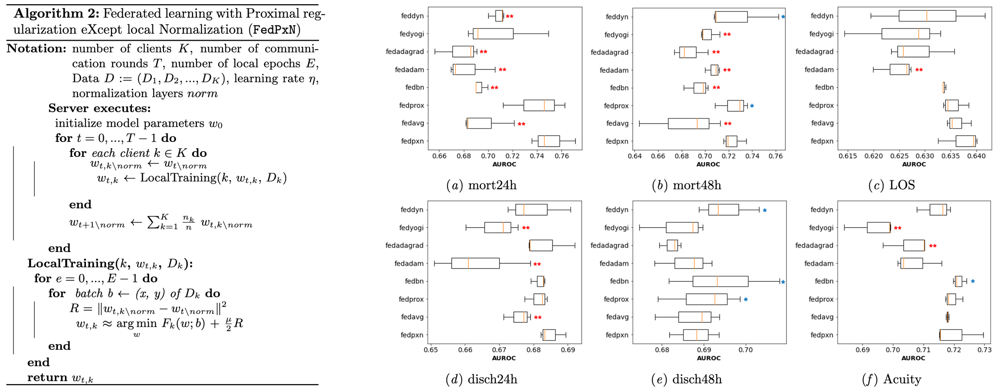
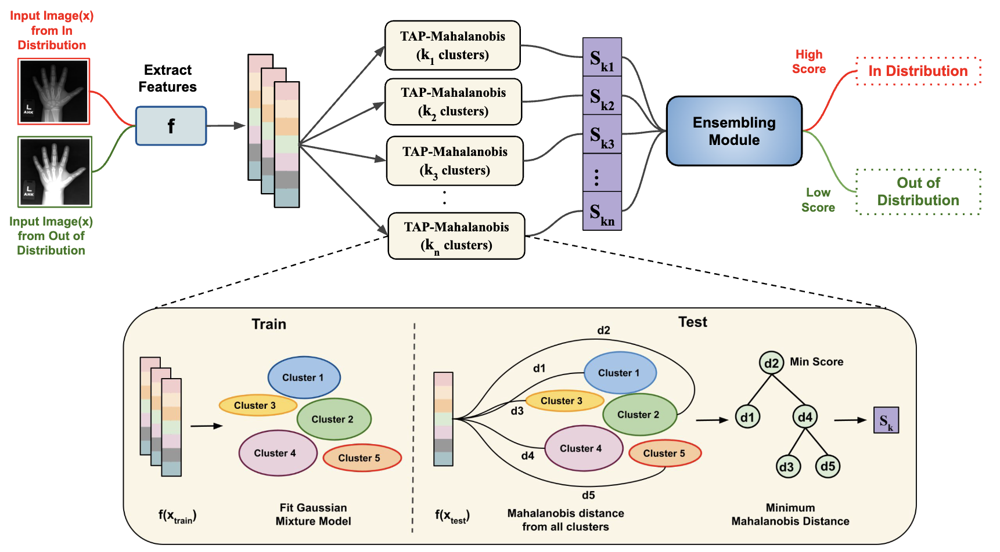
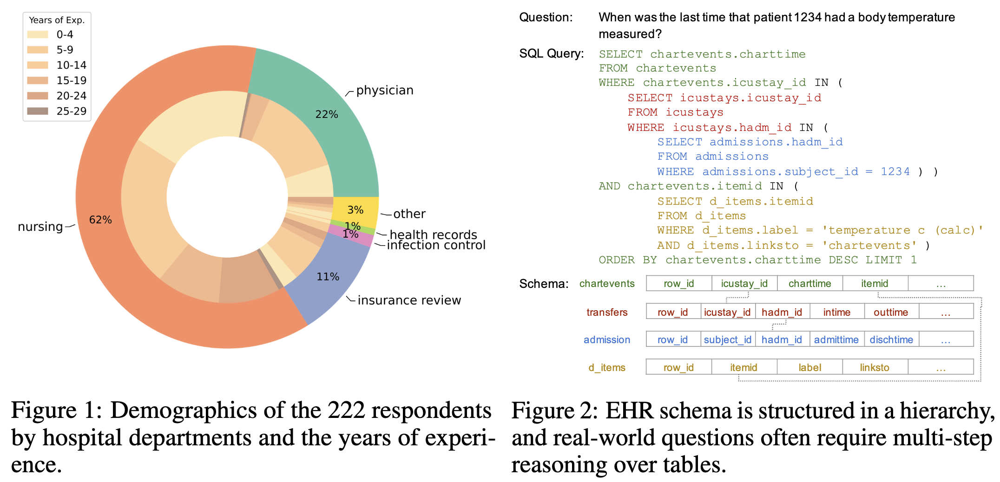
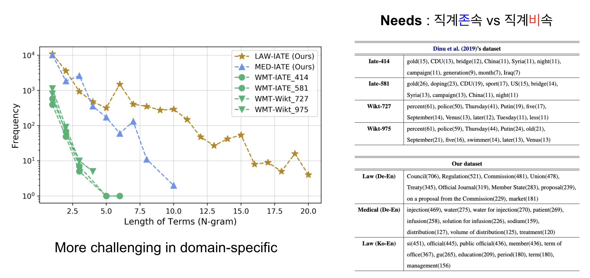

PBISC: Reference-free single-cell-resolution deconvolution of PBMC bulk RNA-seq
A reference-free approach for resolving cell-type composition from bulk transcriptomic measurements at single-cell resolution.
Co-first author
Research
I build AI systems that connect genomic prediction with biological mechanisms and clinically meaningful insight. The goal is to produce robust models whose explanations can guide experiments and generate testable hypotheses.
Work in progress
Research conducted with collaborators at Virtual Human Lab. These manuscripts have been submitted.
A reference-free approach for resolving cell-type composition from bulk transcriptomic measurements at single-cell resolution.
Co-first author
A representation framework that connects transcriptomic profiles with language models through a compact biological token.
Co-author
Selected work
My work has explored language models, efficient inference, trustworthy healthcare AI, distribution shifts, and machine translation. A complete list is available on Google Scholar.





* Equal contribution
Experience & education
Advised by Prof. Peter Koo; researching interpretable AI for genomics.
Worked on LLM post-training, prompting, efficient inference, and applications for games.
Designed tutorials and evaluation workflows for Korean language models.
Advised by Prof. Edward Choi; studied federated learning, healthcare AI, distribution shifts, and NLP.
Worked on language and information-processing research, including an industry–academia project with Hyundai NGV.